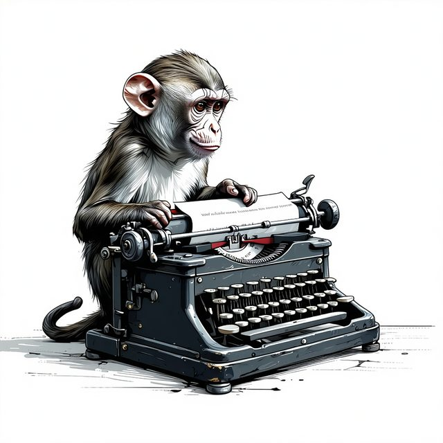

ten thousand monkeys
10km is a lightweight agent loop. It can iterate over a plan like Ralph, optimize to a goal like Karpathy, or do a bit of both. The monkey loop is a generalized loop, which you can be in, on, or outside.
Open the demoGet 10km
Four roles and you
Work is done in cycles, managed by a small, efficient state machine, allowing sessions to run safely in parallel. Use it with any harness or coding agent, cloud or local models.
Demo loop: five days porting synth patches to hardware
Personally, I like my synthesizers modular. I enlisted 10km to port Max Bruckert's excellent Max/MSP patches to the Rebel Technology OWL devices, along with a playable web version just like Stephane Letz's Faust ports.
Agent loops excel at what I call XYZ projects: when you want an X, like Y, but with Z. By making quality gates deterministic and automating repeated tool use, tokens can be saved for higher judgement tasks.
When it had finished I moved the goalpost: make the web version patchable with virtual cables. Because it ain't modular if it ain't got cables. It did, and you can play it here: OWL Gen Patches
Run a loop
docker run -d --name myloop -e AGENT=claude -e LOOP_NAME=myloop \ -v myloop-home:/home/monkey ghcr.io/pingdynasty/10km # AGENT: claude, kiro, codex, pi, hermes docker exec -it myloop claude # log in once docker exec -it myloop 10km kickoff
10km is designed to run in a sandbox and to work well with small models. See the README for running it on a host.
mtv, the monkey televisor
mtv is 10km's web console. It shows the loop status at a glance and provides an easy way to manage loop state, answer escalations and manage the backlog. It also lets you dive deep, analyse loop history, correct course or, if you like, completely change direction.
pip install git+https://github.com/pingdynasty/mtv mtv ~/devel/myloop --open